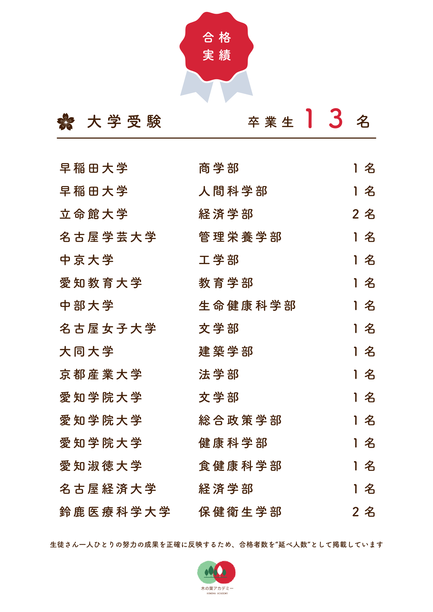
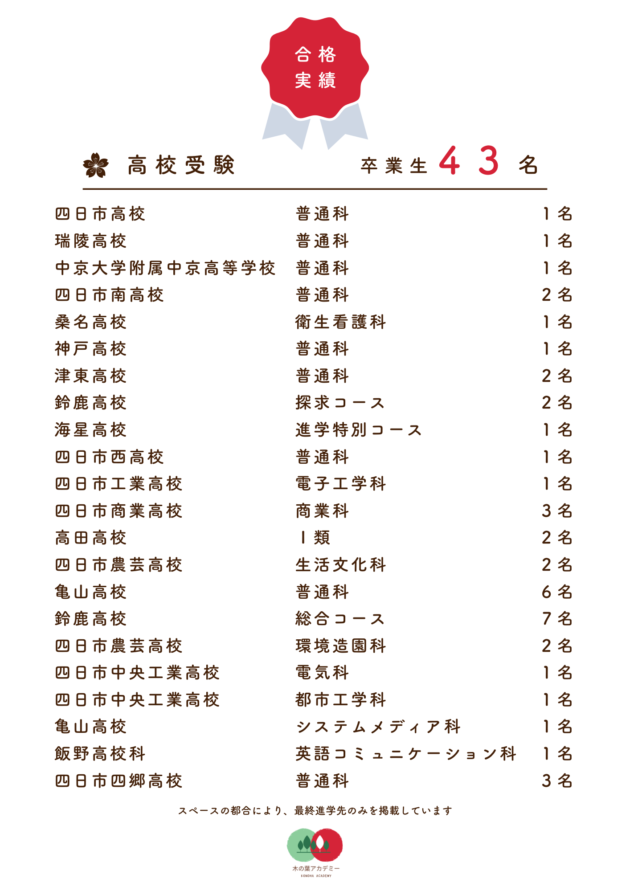
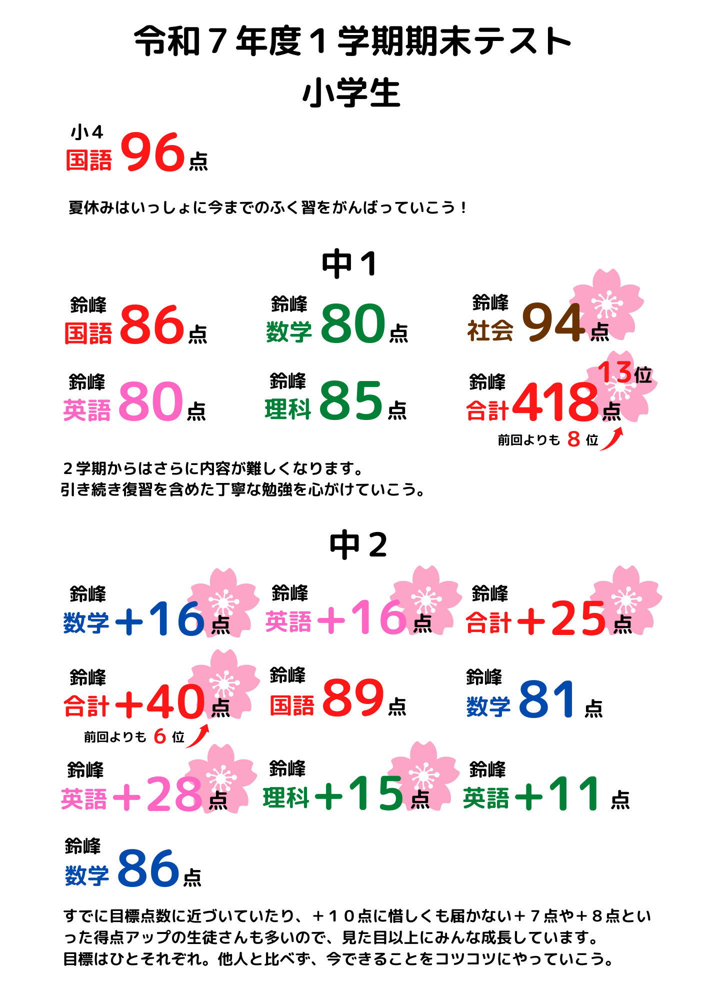
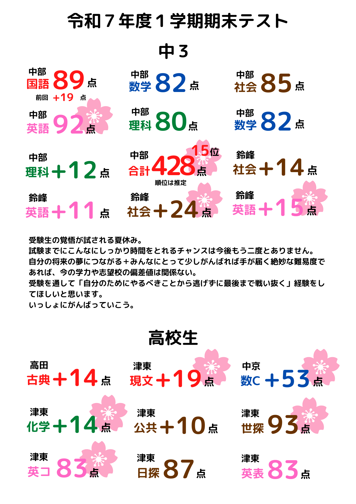
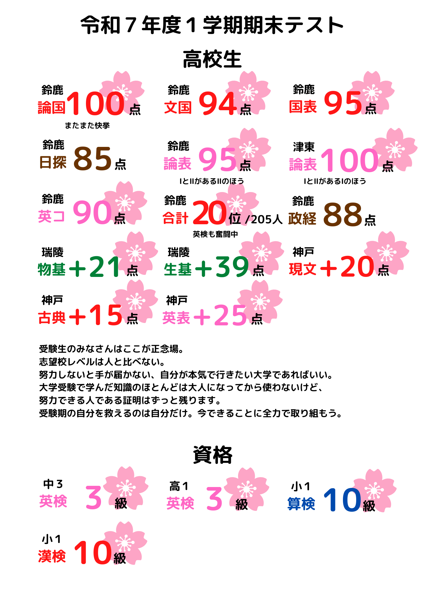

１：１の対面授業と
自宅学習のスケジュール管理で
1人1人に合わせた
完全オリジナル学習プランで
先取り学習も苦手の克服も
ばっちりサポート。
分らないところは
対面個別指導で分かるまで
じっくり解説するから
苦手が残りません！
木の葉アカデミーの講師は塾長ただ一人。
最初から最後まで、
一人の講師が一貫して担当します。
塾での様子、進路相談、受験対策…
全てのご相談に塾長がお応えいたします。
安心してお子さまをお任せください。

大学進学実績(一部抜粋)
高校進学実績(一部抜粋)
定期テストなどの成績(一部抜粋)
  - 家でなかなか勉強してくれない
- ５教科すべて受講したいけど時間と予算が…
- 個別指導でしっかりサポートしてほしい！
- 今の集団塾ではついていけなくてかわいそう…
- 塾の先生がコロコロ変わるのがイヤ
- 先生と直接気軽に連絡、相談がしたい
解説動画を使った徹底サポート
テキストの全問題についている解説動画がいつでも見放題!
対面授業においても、生徒さんの苦手に合わせた個別解説動画を共有することで「自分でやるとわからなくなった」というつまずきを防止。
5教科すべて教科書対応なので授業進度に沿って予習・復習のスケジュールを組むことができます。
スケジュール管理はすべて講師にお任せ
いくら質のいい動画・問題があっても、それを使いこなせないと意味がありません。
当塾ではお子さまの実力に合った内容で５教科すべての学習スケジュールをこちらで組むことで「どうやって勉強すればいいの？」というお悩みを解消します。
学校の宿題、部活や習いごと、志望校や生徒さんの理解度などを考慮しますのでご安心ください。
生徒さん1人1人に真剣に向き合う
塾長が専属で1人1人の生徒さんを指導することで個別指導とスケジュール管理の徹底サポートを実現しています。
圧倒的な情報量の授業報告書や、LINEでの気軽なやり取りなど、大手塾さんにはない丁寧なサポートが好評をいただいています。
| 小学生 | 中学生 | 高１・２ (オンライン通塾可) |
高３ (オンライン通塾可) |
|
| 時間/週 | 確認テスト20分 対面授業70分 の週1回通塾 |
確認テスト20分 対面授業70分 + 自習120分 の週2回通塾 + 5教科の 学習スケジュール作成 |
自習室での 確認テスト120分 (オンライン受講可) の週1回通塾 + 課題添削・解説 + 大学受験に向けた 専用学習スケジュール作成 |
自習室での 確認テスト120分 (オンライン受講可) の週1回通塾 + 課題添削・解説 + 大学受験に向けた 専用学習スケジュール作成 + 大学受験の出願戦略プラン |
| 月額料金 | 22,000円(税込) | 25,300円(税込) | 27,500円(税込) | 29,700円(税込) |
| 小学生 | 中学生 | 高１・２ (オンライン通塾可) |
高３ (オンライン通塾可) |
|
| 時間/週 | 確認テスト20分 対面授業70分 の週1回通塾 |
確認テスト20分 対面授業70分 + 自習120分 の週2回通塾 + 5教科の 学習スケジュール作成 |
自習室での 確認テスト120分 (オンライン受講可) の週1回通塾 + 課題添削・解説 + 大学受験に向けた 専用学習スケジュール作成 |
自習室での 確認テスト120分 (オンライン受講可) の週1回通塾 + 課題添削・解説 + 大学受験に向けた 専用学習スケジュール作成 + 大学受験の出願戦略プラン |
| 月額料金 | 22,000円(税込) | 25,300円(税込) | 27,500円(税込) | 29,700円(税込) |
- 対面授業は月４回の完全個別授業となります
- LINEでの質問対応はすべてのコースで対応しています
- 中学生は５教科（国語、数学、英語、理科、社会）に対応
- 高校生は数学・英語・物理・化学の４教科に対応
※学習スケジュール作成は全教科対応
対面授業は週1回で大丈夫？
学習スケジュール管理や確認テスト、
解説動画などの充実したサポート環境を作ることで
「何をしたらいいか分からない」「理解できなくて先に進めない」
といった悩みを根本的に解決。
自分で考え行動できる自走型の勉強を目指します。
しかしそのためには、
生徒さん本人の
「がんばってみたい」という気持ち
がとても重要です。
私は、
生徒さんに自分の決断と努力で勝ち取る成功体験
を実現してほしいと思っています。
お子さま自身が入塾に対して
まだ前向きになれていない場合、
勉強に対する気持ちや将来の夢、お子さんの好きなことについて、
まずはゆっくりとお話なさってみてください。
おうちの方みなさんが納得されていれば、
当塾はいつでも入塾をお待ちしてます。
小中学生の対面授業
前回の内容の復習テストやその後の対面授業を通して理解度の把握や苦手を発見します。
１問単位で解く問題を指定した専用の宿題プリントを作成します。
対面授業で配布した宿題プリントを自宅で取り組んでもらいます。
また、週１回自習室に来てもらって、学校のテスト日程に沿って作成した定期テスト対策課題に取り組んでもらいます。
勉強習慣を確立し、学習の定着度を高めるため、課題が終わったら報告をしてもらっています。
対面授業の前に確認テストを実施。分からないところは１問単位で解説していきます。授業内で解説した内容を動画にまとめて、自宅で何度も見返すことができるように配慮します。
高校生
生徒さんの学力や志望校、受験方式などを丁寧に分析し「合格できる受験生」が進む道へナビゲートします。
教科数に関わらず、一律料金ですべて大学に対応しますのでご安心ください。
学習スケジュールに沿って自宅で学習を進めてもらいます。
勉強習慣を確立し、学習の定着度を高めるため、課題が終わったら報告をしてもらっています。
また、学習全般の悩みや個別の問題の質問はLINEでいつでも気軽にできます。
自習室に来てもらって、課題の範囲から毎週確認テストを実施します。※オンライン対応可
高３の直前期は赤本を使った本格的な対策を行います。
苦手に合わせた解説や勉強法に関するアドバイスなどを動画にまとめて、自宅で何度も見返すことができるように配慮します。
授業報告書を通して保護者様にも共有し「全員で受験に挑む」感覚を大事にしていきます。
〒519-0315 三重県鈴鹿市山本町１４９５−３